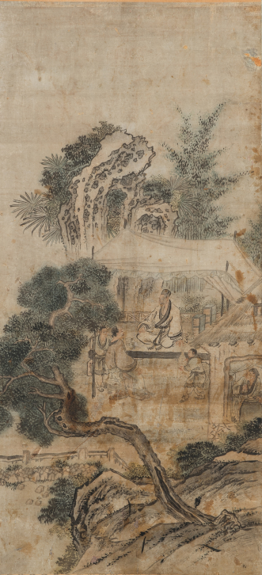
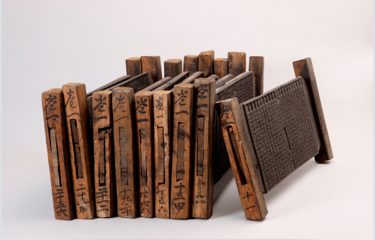
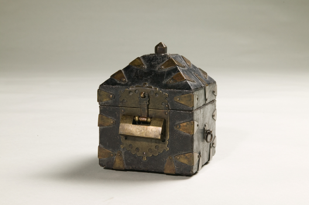
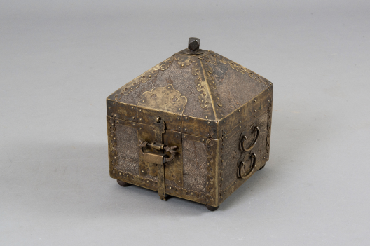

중요소장품
총78개의 게시물이 있습니다.
-

분류명 : 부산광역시 문화재자료
소장품명 : 후원한담도(後園閑談圖)(제117호)
내용 :
후원한담도(後園閑談圖)는 종이에 담묵(淡墨)과 담채(淡彩)를 혼용하여 두 명의 인물이 잔을 두고 담소를 나누는 장면을 그린 작자미상의 산수인물화이다. 태호석(太湖石)과 종려나무, 대나무 숲으로 둘러싸인 후원에 차양을 드리운 공간에서 두 명의 인물이 마주 앉아 잔을 두고 담소를 나누고 있고, 두 인물 주변에서 시중을 드는 세 명의 인물의 모습이 묘사되어 있다. 암반에서 자란 노송과 태호석, 대나무 등은 군자의 절개와 아취를 상징하며, 이들에 둘러싸여 술 혹은 차를 마시며 청담을 나누며 풍류를 즐기는 문인들을 통해 당대 문인들의 이상향을 엿볼 수 있다. 화제 및 낙관이 확인되지 않으나, 산수괴석의 배치 및 묘사법, 인물 표현 등 을 볼 때 김홍도 화풍과의 관련성이 매우 높다고 볼 수 있다. 김홍도의 작품으로 확정할 수는 없으나, 김홍도 전칭작품의 수가 적지 않은 점을 고려할 때 그 가치가 높을 것으로 평가된다.
규격 : 가로 52.0㎝, 세로 113.0㎝ -

분류명 : 부산광역시지정유형문화재
소장품명 : 독례집요 목판(讀禮輯要 木板)(제219호)
내용 :
독례집요 목판(讀禮輯要 木板)은 한학자 사성재(思誠齋) 윤우학(尹禹學, 1852~1930)이 1909년 펴낸 서책 『독례집요(讀禮輯要)』와 『의례변부록』의 목판(199점)과 능화판 1점으로 조선시대 말기 사회상을 알 수 있는 중요한 자료로 평가된다. 책판의 화구 좌변에 분류 표기가 있고, 주는 쌍행(雙行)이며, 백광과 반광이 혼재되어 있다. 사주단변으로 10행(行) 22자(字), 유계(有界)이다. 마구리도 모두 갖추어져 있다. 판심은 ‘독례집요권지일(讀禮輯要卷之一) ○○(張次)’이다. 간기는 별도로 없으나, 서문(序文) 말미에 ‘숭정기원후오기유계춘칠원윤우학서 (崇禎紀元後五己酉季春漆原尹禹學序)’가 있어 1909년에 간행되었음을 알 수 있다. 한 판(권7의 7장)이 결락되었으나 거의 완질이라고 평가되며, 전체적으로 잔존상태가 좋고 능화판까지 모두 남아있어 조선시대 목판 연구에 좋은 자료가 될 것으로 사료된다. *『독례집요』는 9권 5책으로 구성되었으며, 윤우학이 모친상을 계기로 기존 예학서 중 간략하고 요긴한 것을 모으고 자신의 글을 덧붙여 편집한 책이다. 『의례변부록』은 윤우학이 쓴 예학서 『독례집요』의 부록으로 1권 1책으로 구성되었다. 근대화되던 시기에 중앙이 아닌 지방인 경남 합천에서 많은 자료를 모아 이전의 예(禮)를 정리해보려 시도한 데 큰 의미를 지닌 것으로 전문가들은 보고 있다.
규격 : 가로 50.4~55.6㎝, 세로 26.2~33.4㎝, 두께 2.5~5.6㎝ -

분류명 : 부산광역시지정유형문화재
소장품명 : 어피인장함(魚皮印章函)(제196호)
내용 :
부산박물관 소장 어피인장함은 사찰에 소장되어 있는 인궤(印櫃)의 일반적인 형태인 정방형 몸체와 제형(梯形) 뚜껑을 지닌 상자이다. 다만 인장함의 모서리와 각이 지는 부분에 1~2개로 규칙적인 구조로 마름모 형태의 감잡이를 접어서 붙인 후 못을 박았다. 제형 뚜껑에는 몸체와 같이 우진각에 마름모 형태의 감잡이로 결구하고 있으며 정상부에는 화형 받침에 율각형 꼭지가 달려 있기도 하다. 그리고 외부 밑바닥은 사어피로 감싸서 마감하였고 그 네 귀에는 나무로 깎은 유두형 발이 마련해 놓았다. 사어피의 결손이 미미하고 모서리 각 면마다 마름모 형태의 감잡이가 크게 부착되어 있는 독특한 두석장식을 지닌 유물이다. 따라서 동시대에 사찰 인궤로서의 용도 및 유형으로 제작되었던 일반적인 양식과는 다른 특이한 양식을 보여주고 있어 주목된다.
규격 : 가로 21.0㎝, 세로 21.0㎝, 높이 25.5㎝ -

분류명 : 부산광역시지정유형문화재
소장품명 : 임오명 어피인장함(壬午銘 魚皮印章函)(제195호)
내용 :
정방형 몸체에 제형(梯形) 뚜껑이 있는 인장을 보관하기 위한 인궤(印櫃)이다. 특히 오동나무 백골에 상어가죽인 사어피(沙魚皮)를 입혀서 만든 어피함이기도 하다. 붉게 주칠되어 있는 뚜껑 내면에는 명문이 묵서되어 있는데 적외선 사진 촬영 결과 그 중 ‘道光 二年(1822) 壬午 ■印室’이라는 글과 연화질(緣化秩)인 ‘僧統 玆■ 片手 黃■ 古阜 聖元’ 등의 글이 판독되었다. 따라서 이 인장함은 사찰의 승인(僧印)을 보관하기 위한 용도로 1822년에 3인의 승려가 제작하였음을 알 수 있다. 특히 뚜껑 내부에 묵서되어 있는 명문에 의해 이러한 사찰 인장함 양식의 절대연대를 제공해 주고 있는 등 그 가치가 매우 큰 유물이라 할 수 있다.
규격 : 가로 21.0㎝, 세로 21.0㎝, 높이 25.5㎝